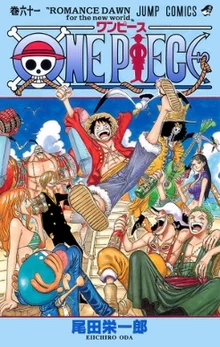
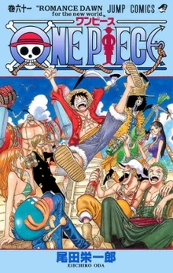

Eiichiro Oda is a Japanese manga artist. He is best known for One Piece which has been serialized since 1997. One Piece is the best-selling manga of all time. Oda has become recognized as one of the manga artists that has changed history.
Oda was born in Kumamoto, Japan. He knew he wanted to become a manga artist at the age of four because he claimed it was the only way to avoid getting a real job. In fifth grade, he was inspired by Weekly Shonen Jump, a popular manga publisher in Japan, to join the soccer club. This was also around the time when Dragon Ball was first published which captivated him, and he would eventually influence his storytelling and art. During his second year of junior high, Oda began drawing manga. He was developing his ideas and sketches for a pirate-themed series that would later become One Piece (Peoplepill.com). After being inspired to play soccer from a manga, he decided to quit soccer so that he can pursue his dream of becoming a manga artist. He began drawing manga at the age of 17 where he serialized his first manga.
Oda’s first serialized manga Wanted! went on to win multiple awards which ended up getting him a job at Japan’s best-selling manga publisher. It was there Oda worked as an assistant for other manga artists. Working as an assistant, he gained experience and inspiration for his drawings. He continued to work at the manga publishing company while also working on his own mangas. During his time as an assistant Oda drew two pirate-themed short stories called Romance Dawn. These shorts included the now main character of One Piece, Monkey D. Luffy. In 1997 the first issue of One Piece was published. The first chapter of one piece slowly became the best-selling manga series of all time. It sold 100 million copies in just 8 years and by 2017 there were 430 million copies circulating around the world. In the future, once One Piece has concluded, Oda said that he wants to draw a robot manga. However, he no longer wants to draw any more long-running mangas because it has negatively impacted his health.
 

The printing process starts with Image retouching. Technicians manually correct the images so that all the drawings are clean and visually appealing. The job differs whether or not it was drawn digitally or on paper. If the manga is drawn on paper it must first be scanned so that technicians can correct the images. If the drawings are digital then there are fewer adjustments that need to be done. They just need to make sure that the shades of gray look smooth in black in white images (Mizutani et al., 2015).
Once the technicians are done editing the drawings, the text is added to the panels. After the text is added a rough print is made for proofing. If flaws are found in the proofing process it is returned to the printers and edited based on the editor’s instructions. This process is repeated until the editor finds nothing wrong with the proof (Mizutani et al., 2015).
Rotary offset printing is used for printing manga due to its speed. When printing so many pages in a short amount of time, prioritizing speed is the most important thing. Paper is fed into the machine in rolls, which are then printed on, dried and folded. This method allows for the company to print around 3,200 pages per minute. After the pages have been printed, dried and folded they are then bound to the book (Mizutani et al., 2015).
After working as a manga artist for seven years Eiichiro Oda married Chiaki Inaba. Inaba was a former model and actress and later retired in 2005. They met at a convention where Chiaki was performing at the One Piece spectacle stage performance in 2002 (Carina, 2021). They ended up getting married in 2004 and by 2006 they gave birth to a baby girl. In 2009 they welcomed their second daughter. However, due to Oda’s work schedule, he lives apart from his family. He only has time to go back home to be with his family during the holidays.
Over the years Oda has made many friends in the manga community, including the author of Naruto, who he sees as a close friend and a rival. They have both included tributes to each other in their own works.
During the earthquake in 2016, Oda donated 800 million yen (USD 8 million) to help Kumamoto Prefecture recover from the earthquake. His donation was separated into two different transactions. 500 million yen was donated under the alias Luffy, which is the main protagonist of One Piece, and the second donation of 300 million yen was donated under Oda’s name (2021).
Throughout his career, Eiichiro Oda has received many awards for his work. Here are some of the awards that he has received (2021):
Over the last 30 years, Oda has created many works. Some of these works include (2021):